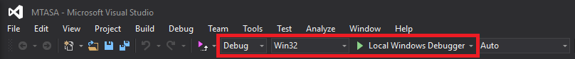
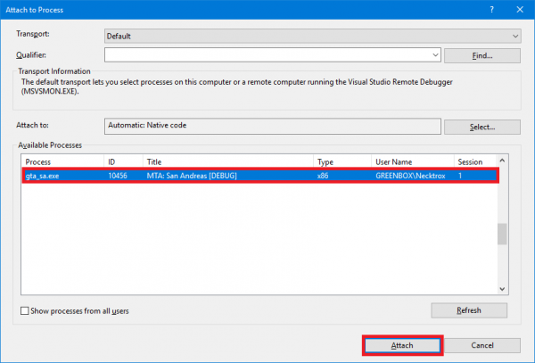
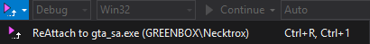

Compiling MTASA
In order to successfully build Multi Theft Auto from source, it is necessary to perform a number of steps, which we will explain below.
Please read the instructions carefully and do not skip parts of it, if you have no experience.
Contents
Prerequisites
You should be using Windows 7 or above, before you can compile the Multi Theft Auto client.
Make sure you have the following software and SDKs installed:
Visual Studio 2019
Download
Microsoft Visual Studio 2019 (Community Edition is free).
Make sure you also install other items during installation, see below.
(You can re-run the installer to modify your current installation, no need to uninstall and reinstall.)
Missing #include "afxres.h"
Make sure you have MFC and ATL support installed. MFC/ATL must be v141.
{kind=link}
Toolset issues
Make sure you have VC++ 2015 toolset installed.
(You can re-run the installer to modify your current installation, no need to uninstall and reinstall)
Addon: ReAttach (optional)
Download: ReAttach
(ReAttach gives you an easy way to re-attach your prior debug targets)
Microsoft DirectX SDK
Download
Microsoft DirectX SDK (August 2009)
NOTE: Restart your computer after installing Microsoft DirectX SDK, because otherwise the environment variable DXSDK_DIR won't be available yet. After restarting it re-run create-projects.bat
Cant find d3dx9.h
Add the $(DXSDK_DIR)Include; to the VC++ Directories in DirectX9GuiRenderer, GUI and Client Core projects.
You can find the VC++ Directories list by selecting a project, then pressing the shortcut ALT + ENTER (without the +), then under the 'Configuration properties' you can find 'VC++ Directories', and in there you can find the 'Include Directories' field, click on it and add ;$(DXSDK_DIR)Include; at the end of it.
Note: You need to do the same thing in Release mode as well
Cant find d3dx9.lib
Do do same as in the error above, but instead of ;$(DXSDK_DIR)Include; you must add ;$(DXSDK_DIR)Lib/x86; to the Library directories field
Note: You need to do the same thing in Release mode as well
S1023 Error
"S1023" error when you install the DirectX SDK (June 2010)
Git Client
If you would like to contribute to MTA, you should install Git. This will allow you to collaborate with us by creating branches and pushing to your own fork. If you are not comfortable with the command line, we recommend you to download and install GitHub Desktop.
If you only want to compile the source code and are not interested in contributing to MTA, you can download the source directly (see below).
Getting the latest source code
To get the latest code, you will have to download the latest copy of our Git repository.
We recommend cloning the repository in your Git client, because you can pull any updates from there easily.
- Repository: multitheftauto/mtasa-blue
- .zip: master.zip
- .tar.gz: master.tar.gz
Compiling the code
- Execute the script win-create-projects.bat
- Open the solution file MTASA.sln in the Build directory
- If you are asked to upgrade the project, click Cancel
- Compile in Visual Studio with Debug configuration (may take some minutes)
- Execute the script win-install-data.bat
Running the software
Running the client
You can start your client in the Bin directory. You might find there a Multi Theft Auto.exe and/or Multi Theft Auto_d.exe executable. The _d suffix indicates a debug build of the software.
Furthermore, you can also run your client inside the debugger from Visual Studio if you want to investigate a stack trace or set breakpoints in interesting code regions (read more in the section Debugging below).
Running the dedicated server
If you already have run the step 5 (Install resources) in Compiling the code to install resources then you can goto Starting the server.
Installing the latest resources
If you want to run the Multi Theft Auto dedicated server, you will have to install the required resources. These are required because they implement the most basic functionality (e.g. spawning players) in order to play.
Our official resources repository is hosted on GitHub. You can download the latest resources from there or download a zipped version. Make sure that you have the latest resources package.
Starting the server
To run the server, open the MTA Server.exe executable in the Bin/server directory. The _d suffix indicates a debug build of the software.
You can also run the debug build MTA Server_d.exe with the Visual Studio Debugger (as of writing, you can do that by right-clicking on the Server's Launcher project and selecting Start a local instance in the Debugger menu), but you can also attach to a running debug build MTA server (see more in the section Debugging below).
Debugging
If you already compiled the code in the Debug configuration then continue reading, if not, then go up to Compilling the code and follow the steps for a Debug build.
You can either launch MTA yourself and attach any debugger you want to use (also applies to the Visual Studio debugger) or you start a local debugging session in Visual Studio.

How to enable breakpoints
If you choose to run MTA with Visual Studio then you should also attach the debugger to the executable gta_sa.exe (press CTRL + ALT + P in Visual Studio) - otherwise your
breakpoints will not work for anything beside the MTA Launcher project.

Extending timeout duration
When you use breakpoints during debugging, you may get kicked by the server due to timeout, because the client is frozen. To prevent this, create the timeout.longtime file in your Bin/server/ directory. The content of the file is the new timeout duration in seconds, so make sure you type a huge number in there. If you keep the file empty, the timeout will be set to 120 seconds.
ReAttach for Visual Studio
You can use ReAttach to re-attach the debugger to the gta_sa.exe executable whenever you start your local debugger in Visual Studio.

Getting involved
Please see our Coding guidelines for information on coding practice.
Additional information
If you need more information, try our bug tracker or IRC channel.
Errors
CL38 error. [netc_d.dll not found]
Solution: Delete Multi Theft Auto_d.exe and hit compile again.
After cloning the repository, it doesn't compile the project
Solution: Execute win-create-projects.bat in main directory.
CL17 Load field. Please ensure that the latest data files have been installed correctly
Solution: Execute win-install-data.bat in main directory.